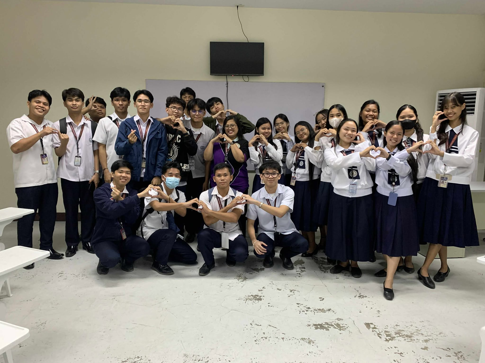

"...and I still don't know how I even survive."
I’m Evangeline B. Anggana, but most people call me Eva—a 20-year-old Information Systems student from Bulacan.
My journey, much like navigating “hard times,” has been about turning challenges into growth.
I value both independent problem-solving and collaborative teamwork, always with an eye for accuracy, efficiency, and user-centered results.
Get to Know Me More
Educational Background

Currently pursuing my Bachelor of Science in Information Systems (Year III),
I’ve been fortunate to earn recognition as a Dean’s Lister and previously graduated Senior High School with honors, Best in Capstone,
and a DOST-recommended project under the STEM strand.
Hobbies

Outside academics, I explore creativity through historical fiction, poetry, and storytelling,
balancing it with practical hobbies like cooking and book collecting. Even the small things—like reading random facts at 2 AM—feed my curiosity and broaden my perspective.
🎬 Curious? Check out the
short film I wrote
with my team last school year!
Interests and Passion

My long-term passion is Quality Assurance, where I see myself combining attention to detail with the drive to ensure excellence in systems and processes.
At the same time, storytelling remains at the heart of how I understand both people and projects.
Projects

Last school year, I was asked by a classmate to test a web application they developed for a course project.
My role was to act as a user tester and provide detailed feedback on bugs, usability issues, and overall experience.
All of my observations and suggestions were documented in their project’s QA spreadsheet.
While this isn’t an official project of mine, it reflects my approach to testing, attention to detail, and communication as an SQA.
You can view the full report below:
QA Spreadsheet - WAD 2
NoteApp Repository - WAD 2
And as someone who's not a fan of coding and programming, it was hard to code all by yourself, especially being in a role of something you're really unfamiliar with.
Skills and Technologies

Experiences: Python, C#, Laravel, PHP, HTML · CSS · JavaScript
Tools & Platforms: GitHub · VS Code · Google Sheets · Figma
Testing Skills: Manual Testing · Black Box Testing · Bug Reporting
Currently Learning: Postman · JIRA
Why SQA?
SQA is not just about finding bugs or pointing out mistakes and lapses, but about ensuring that the team delivers a high-quality product.
As someone who gets bothered by small mistakes, I later realized that the role of SQA fits me perfectly.


{kind=link}
{kind=link}